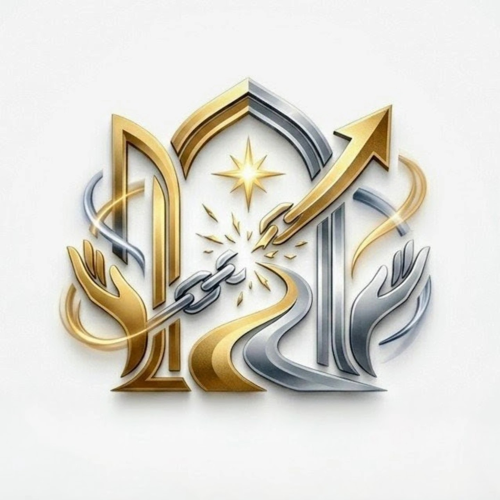

¿Siente que su energía se encuentra bloqueada?
Descubra cómo podemos trabajar juntos en su liberación y armonización personal para restaurar su flujo vital.

Acá le ayudaré a recuperar su equilibrio energético y liberar todo el potencial que tiene, para que pueda disfrutar de una vida plena y feliz.